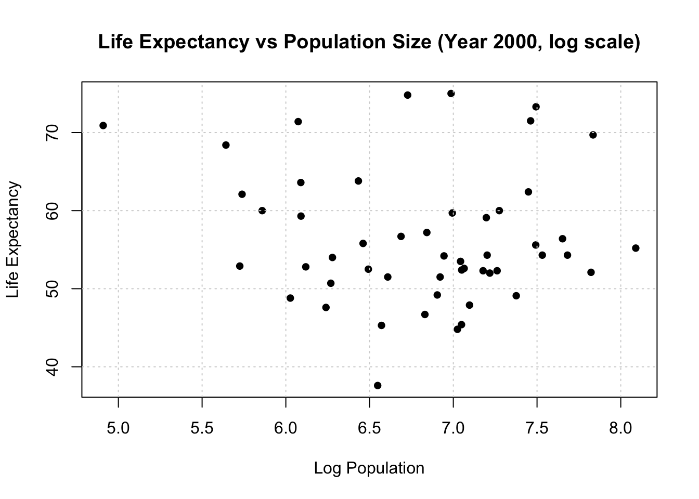
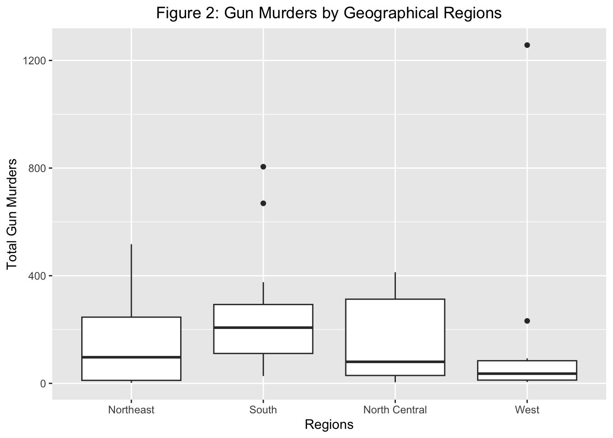

To start, I loaded the dslabs package as part of the assignment and renv package to organize the additional packages and track their usage. The help() function allowed me to look at the gapminder data set. The str() and summary() functions allowed me to get an overview of the data structure and a summary of the data.
library(dslabs)library(renv)
Attaching package: 'renv'
The following objects are masked from 'package:stats':
embed, update
The following objects are masked from 'package:utils':
history, upgrade
The following objects are masked from 'package:base':
autoload, load, remove
help(gapminder)
#get an overview of data structurestr(gapminder)
'data.frame': 10545 obs. of 9 variables:
$ country : Factor w/ 185 levels "Albania","Algeria",..: 1 2 3 4 5 6 7 8 9 10 ...
$ year : int 1960 1960 1960 1960 1960 1960 1960 1960 1960 1960 ...
$ infant_mortality: num 115.4 148.2 208 NA 59.9 ...
$ life_expectancy : num 62.9 47.5 36 63 65.4 ...
$ fertility : num 6.19 7.65 7.32 4.43 3.11 4.55 4.82 3.45 2.7 5.57 ...
$ population : num 1636054 11124892 5270844 54681 20619075 ...
$ gdp : num NA 1.38e+10 NA NA 1.08e+11 ...
$ continent : Factor w/ 5 levels "Africa","Americas",..: 4 1 1 2 2 3 2 5 4 3 ...
$ region : Factor w/ 22 levels "Australia and New Zealand",..: 19 11 10 2 15 21 2 1 22 21 ...
#get a summary of datasummary(gapminder)
country year infant_mortality life_expectancy
Albania : 57 Min. :1960 Min. : 1.50 Min. :13.20
Algeria : 57 1st Qu.:1974 1st Qu.: 16.00 1st Qu.:57.50
Angola : 57 Median :1988 Median : 41.50 Median :67.54
Antigua and Barbuda: 57 Mean :1988 Mean : 55.31 Mean :64.81
Argentina : 57 3rd Qu.:2002 3rd Qu.: 85.10 3rd Qu.:73.00
Armenia : 57 Max. :2016 Max. :276.90 Max. :83.90
(Other) :10203 NA's :1453
fertility population gdp continent
Min. :0.840 Min. :3.124e+04 Min. :4.040e+07 Africa :2907
1st Qu.:2.200 1st Qu.:1.333e+06 1st Qu.:1.846e+09 Americas:2052
Median :3.750 Median :5.009e+06 Median :7.794e+09 Asia :2679
Mean :4.084 Mean :2.701e+07 Mean :1.480e+11 Europe :2223
3rd Qu.:6.000 3rd Qu.:1.523e+07 3rd Qu.:5.540e+10 Oceania : 684
Max. :9.220 Max. :1.376e+09 Max. :1.174e+13
NA's :187 NA's :185 NA's :2972
region
Western Asia :1026
Eastern Africa : 912
Western Africa : 912
Caribbean : 741
South America : 684
Southern Europe: 684
(Other) :5586
#determine the type of object gapminder isclass(gapminder)
[1] "data.frame"
Processing
Essentially, I filtered the dslabs data to process and look at subsets of the data. When looking at the continent of Africa, I created the africadata variable to concentrate the data to that continent.
# Filter only African countriesafricadata <-subset(gapminder, continent =="Africa")#get an overview of data structurestr(africadata)
'data.frame': 2907 obs. of 9 variables:
$ country : Factor w/ 185 levels "Albania","Algeria",..: 2 3 18 22 26 27 29 31 32 33 ...
$ year : int 1960 1960 1960 1960 1960 1960 1960 1960 1960 1960 ...
$ infant_mortality: num 148 208 187 116 161 ...
$ life_expectancy : num 47.5 36 38.3 50.3 35.2 ...
$ fertility : num 7.65 7.32 6.28 6.62 6.29 6.95 5.65 6.89 5.84 6.25 ...
$ population : num 11124892 5270844 2431620 524029 4829291 ...
$ gdp : num 1.38e+10 NA 6.22e+08 1.24e+08 5.97e+08 ...
$ continent : Factor w/ 5 levels "Africa","Americas",..: 1 1 1 1 1 1 1 1 1 1 ...
$ region : Factor w/ 22 levels "Australia and New Zealand",..: 11 10 20 17 20 5 10 20 10 10 ...
#get a summary of datasummary(africadata)
country year infant_mortality life_expectancy
Algeria : 57 Min. :1960 Min. : 11.40 Min. :13.20
Angola : 57 1st Qu.:1974 1st Qu.: 62.20 1st Qu.:48.23
Benin : 57 Median :1988 Median : 93.40 Median :53.98
Botswana : 57 Mean :1988 Mean : 95.12 Mean :54.38
Burkina Faso: 57 3rd Qu.:2002 3rd Qu.:124.70 3rd Qu.:60.10
Burundi : 57 Max. :2016 Max. :237.40 Max. :77.60
(Other) :2565 NA's :226
fertility population gdp continent
Min. :1.500 Min. : 41538 Min. :4.659e+07 Africa :2907
1st Qu.:5.160 1st Qu.: 1605232 1st Qu.:8.373e+08 Americas: 0
Median :6.160 Median : 5570982 Median :2.448e+09 Asia : 0
Mean :5.851 Mean : 12235961 Mean :9.346e+09 Europe : 0
3rd Qu.:6.860 3rd Qu.: 13888152 3rd Qu.:6.552e+09 Oceania : 0
Max. :8.450 Max. :182201962 Max. :1.935e+11
NA's :51 NA's :51 NA's :637
region
Eastern Africa :912
Western Africa :912
Middle Africa :456
Northern Africa :342
Southern Africa :285
Australia and New Zealand: 0
(Other) : 0
I looked at three variables - life expectancy, infant mortality and population size - and processed that data by plotting the latter to variables through the two objects, infantLife and popLife.
# Create a new object with infant_mortality and life_expectancyinfantLife <- africadata[, c("infant_mortality", "life_expectancy")]# Create a new object with population and life_expectancypopLife <- africadata[, c("population", "life_expectancy")]
#get an overview of data structure for the two new objectsstr(africadata)
'data.frame': 2907 obs. of 9 variables:
$ country : Factor w/ 185 levels "Albania","Algeria",..: 2 3 18 22 26 27 29 31 32 33 ...
$ year : int 1960 1960 1960 1960 1960 1960 1960 1960 1960 1960 ...
$ infant_mortality: num 148 208 187 116 161 ...
$ life_expectancy : num 47.5 36 38.3 50.3 35.2 ...
$ fertility : num 7.65 7.32 6.28 6.62 6.29 6.95 5.65 6.89 5.84 6.25 ...
$ population : num 11124892 5270844 2431620 524029 4829291 ...
$ gdp : num 1.38e+10 NA 6.22e+08 1.24e+08 5.97e+08 ...
$ continent : Factor w/ 5 levels "Africa","Americas",..: 1 1 1 1 1 1 1 1 1 1 ...
$ region : Factor w/ 22 levels "Australia and New Zealand",..: 11 10 20 17 20 5 10 20 10 10 ...
#get a summary of data for infantLife and popLifesummary(africadata)
country year infant_mortality life_expectancy
Algeria : 57 Min. :1960 Min. : 11.40 Min. :13.20
Angola : 57 1st Qu.:1974 1st Qu.: 62.20 1st Qu.:48.23
Benin : 57 Median :1988 Median : 93.40 Median :53.98
Botswana : 57 Mean :1988 Mean : 95.12 Mean :54.38
Burkina Faso: 57 3rd Qu.:2002 3rd Qu.:124.70 3rd Qu.:60.10
Burundi : 57 Max. :2016 Max. :237.40 Max. :77.60
(Other) :2565 NA's :226
fertility population gdp continent
Min. :1.500 Min. : 41538 Min. :4.659e+07 Africa :2907
1st Qu.:5.160 1st Qu.: 1605232 1st Qu.:8.373e+08 Americas: 0
Median :6.160 Median : 5570982 Median :2.448e+09 Asia : 0
Mean :5.851 Mean : 12235961 Mean :9.346e+09 Europe : 0
3rd Qu.:6.860 3rd Qu.: 13888152 3rd Qu.:6.552e+09 Oceania : 0
Max. :8.450 Max. :182201962 Max. :1.935e+11
NA's :51 NA's :51 NA's :637
region
Eastern Africa :912
Western Africa :912
Middle Africa :456
Northern Africa :342
Southern Africa :285
Australia and New Zealand: 0
(Other) : 0
# Plot life expectancy as a function of infant mortalityplot(infantLife$infant_mortality, infantLife$life_expectancy,main ="Life Expectancy vs Infant Mortality",xlab ="Infant Mortality",ylab ="Life Expectancy",pch =16) # Set the point type to a solid circle# Add grid linesgrid()
# Plot life expectancy as a function of population size (log scale)plot(log10(popLife$population), popLife$life_expectancy,main ="Life Expectancy vs Population Size (log scale)",xlab ="Log Population",ylab ="Life Expectancy",pch =16) # Set the point type to a solid circle# Add grid linesgrid()
The different streaks within the plots are due to a change in the years for which the data as collected for each country. This creates a trend the across the plot indicating a relationship in the data points for the specific streaks.
# Find years with missing data for infant mortalityyears_with_na <-unique(africadata[is.na(africadata$infant_mortality), "year"])# Identify years to exclude (up to 1981 and for 2016)years_to_exclude <-c(1970:1981, 2016)# Choose the year 2000 and exclude other yearsselected_year <-2000filtered_africadata <- africadata[africadata$year == selected_year &!(africadata$year %in% years_to_exclude), ]# Check the dimensions of the filtered datadim(filtered_africadata)
[1] 51 9
I focused on the year 2000 to remove this effect for processing and then plotted the data. Finally, I looked at the simple regression model to assess the relationship of the variables within the two objects.
Plotting
# Plot life expectancy as a function of infant mortality for the year 2000plot(filtered_africadata$infant_mortality, filtered_africadata$life_expectancy,main ="Life Expectancy vs Infant Mortality (Year 2000)",xlab ="Infant Mortality",ylab ="Life Expectancy",pch =16) # Set the point type to a solid circle# Add grid linesgrid()
# Plot life expectancy as a function of population size (log scale) for the year 2000plot(log10(filtered_africadata$population), filtered_africadata$life_expectancy,main ="Life Expectancy vs Population Size (Year 2000, log scale)",xlab ="Log Population",ylab ="Life Expectancy",pch =16) # Set the point type to a solid circle# Add grid linesgrid()

Modeling
# Fit linear regression with life expectancy as the outcome and infant mortality as the predictorfit1 <-lm(life_expectancy ~ infant_mortality, data = filtered_africadata)# Fit linear regression with life expectancy as the outcome and population size (log scale) as the predictorfit2 <-lm(life_expectancy ~log10(population), data = filtered_africadata)# Print summary for fit1summary(fit1)
Call:
lm(formula = life_expectancy ~ infant_mortality, data = filtered_africadata)
Residuals:
Min 1Q Median 3Q Max
-22.6651 -3.7087 0.9914 4.0408 8.6817
Coefficients:
Estimate Std. Error t value Pr(>|t|)
(Intercept) 71.29331 2.42611 29.386 < 2e-16 ***
infant_mortality -0.18916 0.02869 -6.594 2.83e-08 ***
---
Signif. codes: 0 '***' 0.001 '**' 0.01 '*' 0.05 '.' 0.1 ' ' 1
Residual standard error: 6.221 on 49 degrees of freedom
Multiple R-squared: 0.4701, Adjusted R-squared: 0.4593
F-statistic: 43.48 on 1 and 49 DF, p-value: 2.826e-08
# Print summary for fit2summary(fit2)
Call:
lm(formula = life_expectancy ~ log10(population), data = filtered_africadata)
Residuals:
Min 1Q Median 3Q Max
-19.113 -4.809 -1.554 3.907 18.863
Coefficients:
Estimate Std. Error t value Pr(>|t|)
(Intercept) 65.324 12.520 5.217 3.65e-06 ***
log10(population) -1.315 1.829 -0.719 0.476
---
Signif. codes: 0 '***' 0.001 '**' 0.01 '*' 0.05 '.' 0.1 ' ' 1
Residual standard error: 8.502 on 49 degrees of freedom
Multiple R-squared: 0.01044, Adjusted R-squared: -0.009755
F-statistic: 0.517 on 1 and 49 DF, p-value: 0.4755
Conclusion
For fit1(infantLife in 2000), the pvalue is low indicating that the weak negative correlation is significant and we can reject the null hypothesis that the correllation is equal to 0. #For fit2(popLife in 2000), the pvalue is greater than .05 indicating that we cannot reject the null hypothesis that there is no linear relationship between logPopulation and life expectancy.
This section is contributed by Malika Dhakhwa
This part of the exercise examines gun murders in the United States in 2010, using the ‘murders’ dataset found in R’s ‘dslabs’ package. The analysis leverages the comprehensive capabilities of the ‘tidyverse’ package for data manipulation, visualization and analysis.
R’s help function provides insightful guidance on various datasets, including ‘murders’. For instance, executing ‘help(murders)’ in R prompts to detailed information about this dataset.
#load dslabs packagelibrary("dslabs")#look at help file for NYC Regents exams scores 2010 datahelp(murders)#load tidyverse packagelibrary(tidyverse)
── Attaching core tidyverse packages ──────────────────────── tidyverse 2.0.0 ──
✔ dplyr 1.1.4 ✔ readr 2.1.5
✔ forcats 1.0.0 ✔ stringr 1.5.1
✔ ggplot2 3.4.4 ✔ tibble 3.2.1
✔ lubridate 1.9.3 ✔ tidyr 1.3.0
✔ purrr 1.0.2
── Conflicts ────────────────────────────────────────── tidyverse_conflicts() ──
✖ dplyr::filter() masks stats::filter()
✖ dplyr::lag() masks stats::lag()
✖ purrr::modify() masks renv::modify()
ℹ Use the conflicted package (<http://conflicted.r-lib.org/>) to force all conflicts to become errors
As exhibited in the help window, the ‘murders’ dataset contains columns of the US state and their abbreviation, Geographical US region, State population of 2010 and Number of gun murders by states in 2010. A detailed breakdown of the Variable Names and Variable are listed below.
Variable Name Variable state US state abb Abbreviation of US state region Geographical US region population State population (2010) total Number of gun murders in state (2010)
The str function pulls the structure of the actual data. As we can see below, the ‘murders’ data has 51 observations and 5 variables. There are two numerical variables, state population in 2010 and number of gun murders in the state in 2010; two character variables state and abb and one factor variable, region.
The summary(murders) provides statistical overview. For numerical columns, it presents minimum, maximum, mean, median, quartiles and missing values. For categorical or factor columns, it provides a count of the number of occurrences for each level. For example, there are 9 observations for Northeast region, 17 for the South, 12 for the North Central and 13 for the West region. No missing values are observed.
#get a summary of datasummary(murders)
state abb region population
Length:51 Length:51 Northeast : 9 Min. : 563626
Class :character Class :character South :17 1st Qu.: 1696962
Mode :character Mode :character North Central:12 Median : 4339367
West :13 Mean : 6075769
3rd Qu.: 6636084
Max. :37253956
total
Min. : 2.0
1st Qu.: 24.5
Median : 97.0
Mean : 184.4
3rd Qu.: 268.0
Max. :1257.0
It is important to find out the class or type of an object in R before applying any functions and operations. Determining the object’s class with ‘class(murders)’ confirms that ‘murders’ is a ‘data.frame’, indicative of its tabular structure in R.
#determine the type of object murders isclass(murders)
[1] "data.frame"
To visualize the data distribution, a few plots are created. Population have larger values, some in millions. For the purpose of better model fitting, the population is converted into ‘thousands’ number by dividing it by 1000n
#population in thousandsmurders <- murders %>%mutate(pop_thousands= population /1000)
A scatter plot of total murder by states is plotted against state population which revealed a positive correlation between the number of gun murders and population in the states in 2010.
#Plotting number of gun murders in state as a function of state populationp1 <- murders %>%ggplot(aes(x=pop_thousands, y=total)) +geom_point() +geom_smooth(method='lm')+ggtitle("Figure 1: Gun Murders in the States by Population")+theme(plot.title =element_text(hjust =0.5)) +xlab("Population in 'Thousands'") +ylab("Total Gun Murders")plot(p1)
Second, box plot is created to compare the distribution of total gun murders by state across four different geographical regions.It suggests that the South region has the highest median indicating more states in this region had higher murder rates in 2010 compared to other regions. It is followed by Northeast, North Central, and the West regions. The North Central region has larger inter-quartile range, suggesting a larger variation in the number of gun murders by state in 2010 compared to other regions The outliers on the plots of South and West regions indicate that few states in these two regions had exceptionally higher murder counts in 2010.
#Plotting number of gun murders in US Geographical regionsp2 <- murders %>%ggplot(aes(x=region, y=total)) +geom_boxplot()+ggtitle("Figure 2: Gun Murders by Geographical Regions")+theme(plot.title =element_text(hjust =0.5)) +xlab("Regions") +ylab("Total Gun Murders")plot(p2)

Next, box plot is created to compare the distribution of state populations across the four geographical regions.It revealed the North Central region has the highest median indicating more states in this region had larger population in 2010 compared to other regions. It is followed by South, North East, and the West. The Northeast region has larger inter-quartile ranges, indicating a larger variation in population by state in 2010 compared to other regions. The box plots also suggest that one state in the West and two in the South are exceptionally highly populated.
#Plotting number of gun murders in Geographical US regionp3 <- murders %>%ggplot(aes(x=region, y= pop_thousands)) +geom_boxplot()+ggtitle("Figure 3: Population by Geographical Regions")+theme(plot.title =element_text(hjust =0.5)) +xlab("Regions") +ylab("Population in 'Thousands'") plot(p3)
While the scatter plot suggested a positive correlation between state population and the number of gun murders, the box plots do not provide clear evidence to support this trend.
Further examination is performed fitting a linear model with number of gun murders in 2010 as outcome and Geographical US region (a factor) and State population measured in thousands as predictors.
Based on the extremely small p-value, population is a significant predictor of gun murders in the US states in 2010. On average, for each addition of one thousand in the population, the number of gun murders increased by 0.03. The South region is also significant at 5% level. Its coefficient suggests that, holding population constant, the South region, on an average, had 61.913 more gun murders than the Northeast region in 2010.
fit1 <-lm(total ~ population + region, murders)
#Printing the results of the linear model fit1summary(fit1)
Call:
lm(formula = total ~ population + region, data = murders)
Residuals:
Min 1Q Median 3Q Max
-93.124 -42.386 -1.239 24.105 178.883
Coefficients:
Estimate Std. Error t value Pr(>|t|)
(Intercept) -3.881e+01 2.114e+01 -1.836 0.0728 .
population 3.287e-05 1.225e-06 26.823 <2e-16 ***
regionSouth 6.191e+01 2.444e+01 2.534 0.0148 *
regionNorth Central 7.818e+00 2.614e+01 0.299 0.7662
regionWest 3.897e+00 2.570e+01 0.152 0.8801
---
Signif. codes: 0 '***' 0.001 '**' 0.01 '*' 0.05 '.' 0.1 ' ' 1
Residual standard error: 59.25 on 46 degrees of freedom
Multiple R-squared: 0.9421, Adjusted R-squared: 0.937
F-statistic: 187 on 4 and 46 DF, p-value: < 2.2e-16